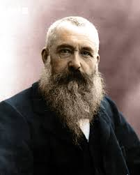

Bob Ross

Bob Ross is an inspirational American artist and educator who educates others on how to make art.
He teaches others never to give up on art. Bob Ross is also a television host inspiring many young
artists
Bob Ross is an inspirational American artist and educator who educates others on how to make art.
He teaches others never to give up on art. Bob Ross is also a television host inspiring many young
artists

Claude Monet is french impressionalist painter. Monet often utilized oil paints to help capture
landscape paintings. Monet became famous for his unique way of painting so simply but realistically.
Monet provides a creative outlook to our team.

Leonardo da Vinci is a famous Italian artist and mathmentician crowning the golden rule for humans
anatomy. Leonardo da Vinci is most famous for the Mona Lisa, a portrait that leaves art historians
puzzled to this day about who the girl is.